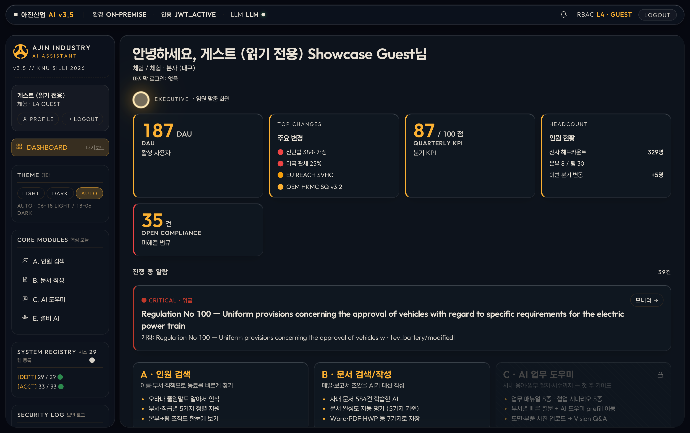
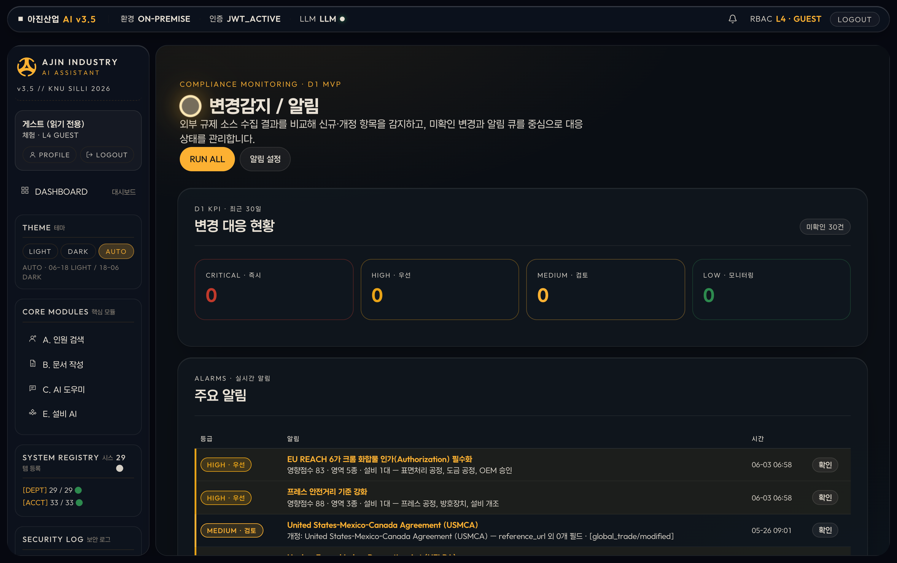
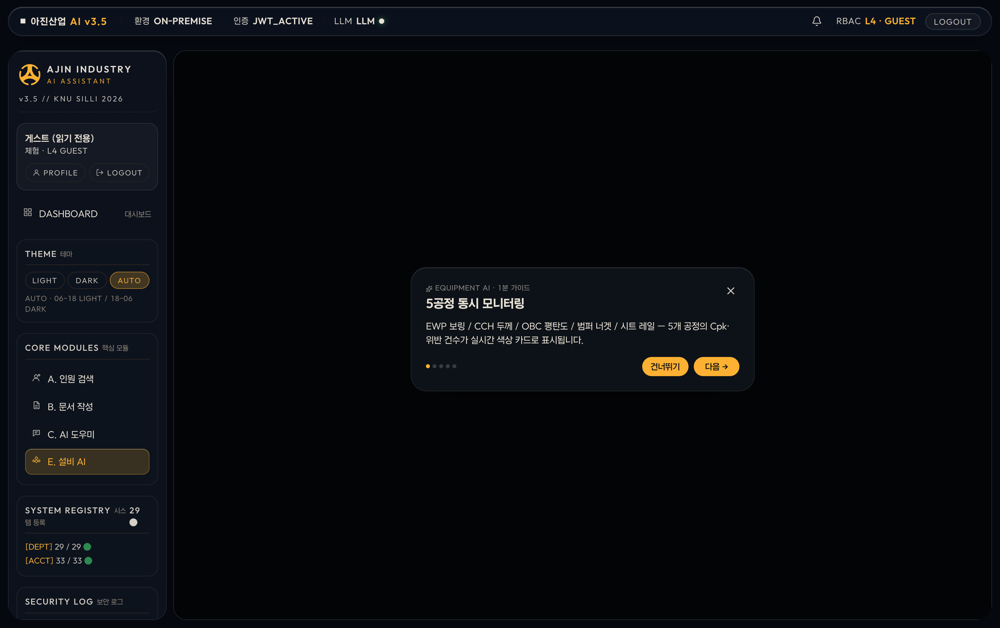
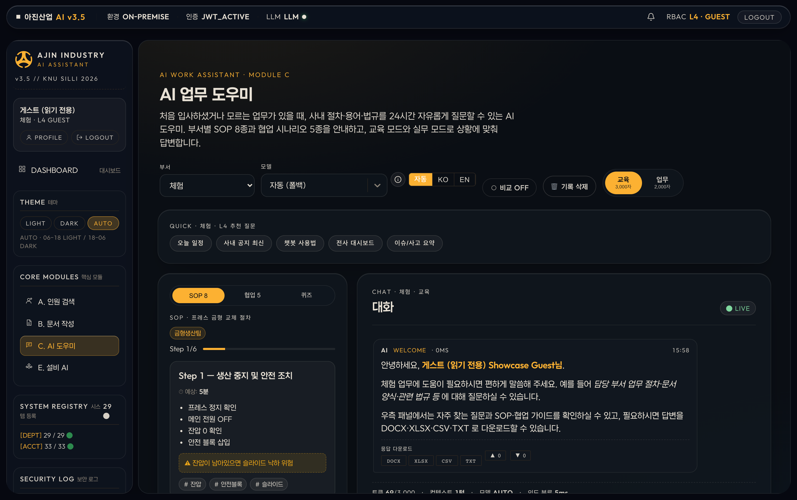
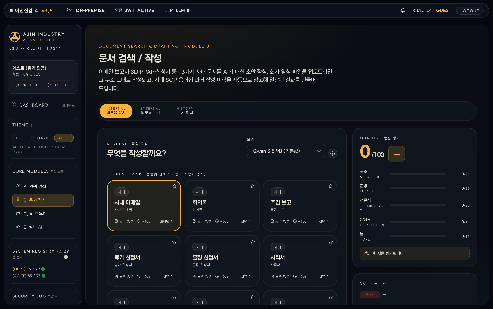
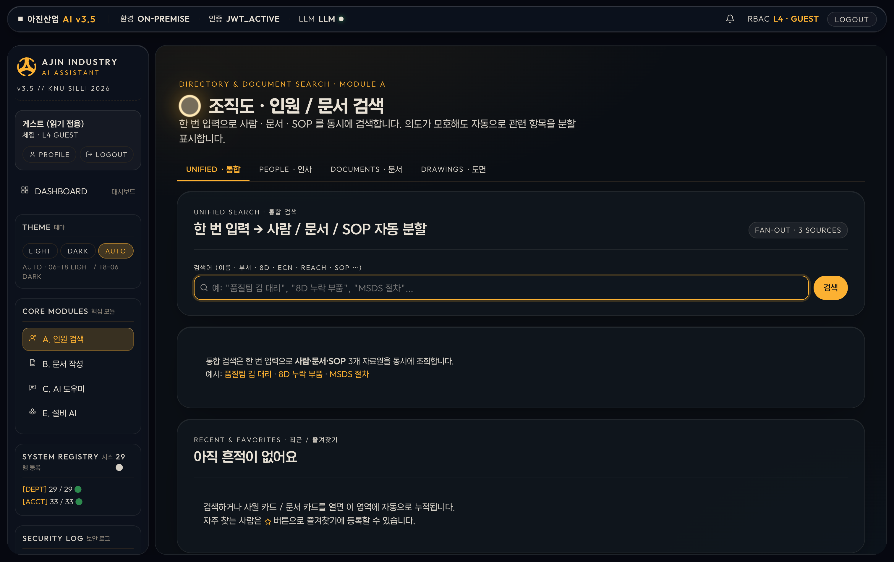

데이터는 회사 밖으로 안 나가요.
똑똑함은 그대로 두고, 보안만 챙겼습니다.
묻기 전에 사내 문서·법규·매뉴얼을 먼저 뒤져봐요. 그리고 출처까지 붙여서 답합니다. 그럴듯한 헛소리 대신, 근거 있는 답.
AI 두뇌(Ollama)를 사내에서 직접 굴려요. 민감한 정보가 외부 클라우드로 흘러가지 않습니다. 필요할 땐 보안 터널로만 살짝 연결.
오늘의 알람, KPI, 미해결 법규, 시스템 상태까지. 페르소나별로 필요한 위젯만 딱.

매일 새벽 9개 규제 사이트를 자동으로 돌며 바뀐 걸 잡아내요. 심각도(위급·우선·검토)로 분류하고, 미해결 알림은 큐로 챙겨줍니다.

공정 데이터를 통계로 지켜보다가 이상 징후(Nelson 룰)를 실시간 감지해요. 도면·매뉴얼은 사진으로 물어봐도 척척.

ChatGPT처럼 흐르듯 답하는데, 이건 회사 안에서 도는 우리 AI예요. 근거 문서를 인용하고, 이미지도 읽습니다.

AI가 만든 초안을 실제 업무 파일로 즉시 변환해요. 워드·PDF·엑셀은 물론 한글(HWPX)까지.

키워드 매칭 + 의미 유사도 + 한국어 형태소 분석을 한 번에. 줄임말·동의어·오타에도 정확하게 사람을 찾아줍니다.

어떤 기술을, 무엇을 위해 썼는지.
온디바이스 AI 업무보조